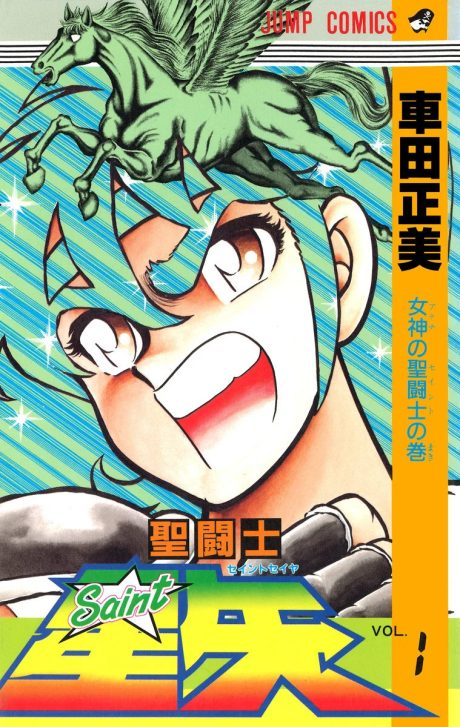

Saint Seiya: Knights of the Zodiac
聖闘士星矢
Seiya and other young warriors called Saints, who wear armour based on constellations, fight to protect the goddess Athena.
The anime covers the whole manga.
7.3AniList score
—Animeter, no votes yet
211episodes, 2 seasons
Rate it or report where you stopped
Anime finished. Where does the manga pick up?
StatusFully adapted
Listed as a complete adaptation: the TV series covers the manga through the Poseidon arc and the Hades arc follows in OVAs; Omega is an original sequel.
More like Saint Seiya: Knights of the Zodiac
 Manga Ch. 3408.9
Manga Ch. 3408.9
 Done8.0
Done8.0
 Manga Ch. 407.8
Manga Ch. 407.8
 Manga SBR 247.7
Manga SBR 247.7
 Unclear6.9
Unclear6.9
 Manga Ch. 1118.0
Manga Ch. 1118.0
 Done9.0
Done9.0
 Manga Ch. 1997.8
Manga Ch. 1997.8
 Done8.5
Done8.5
 Own end7.4
Own end7.4
 Manga Vol. 37.0
Manga Vol. 37.0
 Manga Ch. 1507.9
Manga Ch. 1507.9